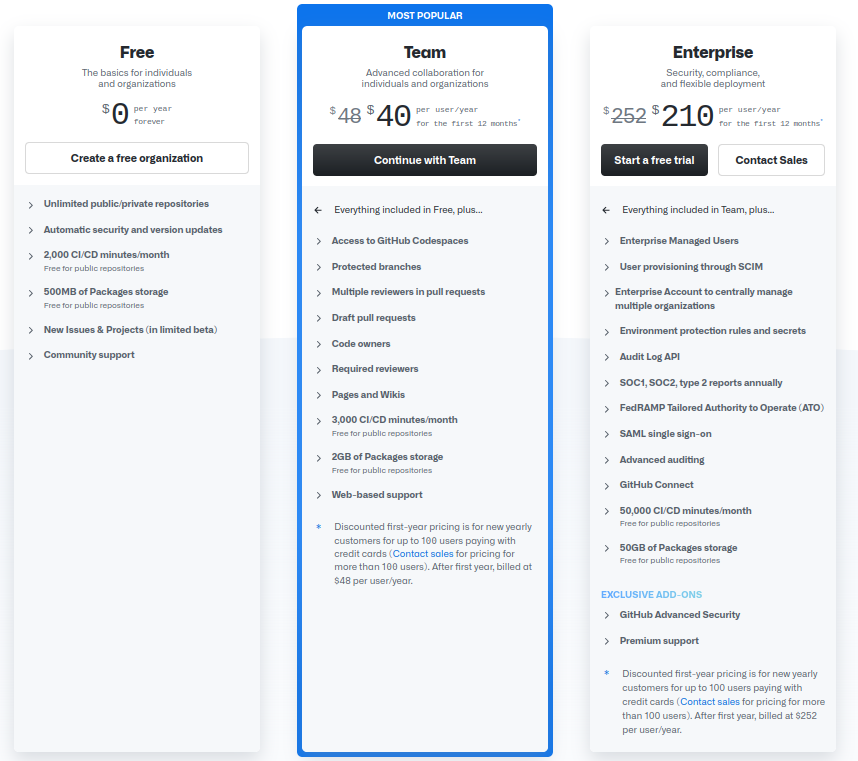

独り GitHub Team を作ってみた

GitHub のリポジトリで諸々を公開するようになって後悔（駄洒落だよ）してるのは「ユーザ名が長すぎる」ことである。 ユーザ名は（名前が被らなければ）後から変更することもできるのだが（新しい方の URL にリダイレクトされる）， Go の場合はリポジトリの URI がそのままモジュール・パッケージのパスになるので移行が面倒そうだし，このブログ（GitHub Page）の CNAME 変更も面倒が起きそうな気がしたので諦めていた。
でも，半年ほど前に
nyaosorg という organization を作って、そちらへ nyagos のレポジトリを引っ越しました。nyagos が依存するパッケージも順次そちらへ移動する予定ですhttps://t.co/yFwrGxdHiP
— 𝒏𝒚𝒂𝒐𝒔.𝒐𝒓𝒈 (@NyaosOrg) September 12, 2021
という tweet を見て「なるほど！」と思ったわけよ。 もっとも本業がだんだん忙しくなって何となく先延ばしにしてたのだが，昨日ついカッとなってやってもうた。
忙しいときほど要らんことをしたくなるよね（部屋の掃除とか）。 今はちょっとだけ反省している。
“ark” は archive の駄洒落である1。 なので「ごーあーく」とでも呼んでいただければ幸いである。 もしくは更に縮めて「ごらく」とか（読めねーよ）
用途としては，タイトル通り，個人的な「Go の遊び場」として利用することを考えとりやす。 元の github.com/spiegel-im-spiegel から Go パッケージを徐々に移行する予定。 とりあえず gpgpdump と depm は個人的に使うので（依存パッケージと併せて）真っ先に移行した。 他のアクティブなパッケージもそのうち移行するつもりである。
移行自体は簡単で，リポジトリの Settings ページの下の方に “Danger Zone” てのがあるのだが
{kind=link}
その中の “Transfer ownership” で移行先のユーザ名（または組織名）を指定すればよい。
{kind=link}
移行するためには移行先にリポジトリの作成権限があることが必要。
更に Go パッケージについてはソースコード内のインポート・パスを書き換えないといけないのだが，実際にやってみると思ったほど大変ではなかった。
go.mod ファイルに依存パッケージが列挙されているので，これを見ながら一括置換してしまえばいいのだ。
注意する点としては移行後にバージョンタグを付けてバージョンを上げておくこと。
そうしないと，ひとつのバージョンに対して複数のパスが存在することになり go mod tidy とかでがっつり怒られる。
そうそう。 今回は Free ではなく，有料の Team にした。 だって Codespace が使いたかったんじゃもん。

今や IDE やエディタも XaaS の時代ですよ。 まぁ，飽きたらフリーに戻すかも知れんけど。
ブックマーク
-
GitHub のアカウントの名前を変更したら起きること - 標準愚痴出力
- 続・GitHub のアカウントの名前を変更したら起きること 〈AppVeyor編〉 - 標準愚痴出力 : 結局 GitHub のユーザ名を変えて一番面倒くさいのは OAuth 周りなんだな。やっぱ下手に変えないほうがいいか
参考図書

- プログラミング言語Go (ADDISON-WESLEY PROFESSIONAL COMPUTING SERIES)
- Alan A.A. Donovan (著), Brian W. Kernighan (著), 柴田 芳樹 (翻訳)
- 丸善出版 2016-06-20
- 単行本（ソフトカバー）
- 4621300253 (ASIN), 9784621300251 (EAN), 4621300253 (ISBN)
- 評価
著者のひとりは（あの「バイブル」とも呼ばれる）通称 “K&R” の K のほうである。この本は Go 言語の教科書と言ってもいいだろう。と思ったら絶版状態らしい（2025-01 現在）。復刊を望む！
-
エンジニアに必要なのはダジャレ力だって Go の偉い人が言ってた（笑） ↩︎